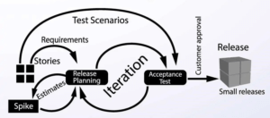

Extreme Programming (XP) on tarkvaraarenduse metoodika, mis keskendub kõrgele kvaliteedile, pidevale tagasisidele ja paindlikule töökorraldusele. Selle töötas välja Kent Beck 1990ndate lõpus eesmärgiga luua protsess, mis võimaldab arendajatel kiirelt kohanduda muutuva ärikeskkonnaga ning tarnida klientidele väärtuslikku tarkvara.
------------------------------------------------- XP põhineb viiel põhiväärtusel:
XP rakendab mitmeid unikaalseid tehnikaid, et tagada kvaliteet ja efektiivsus:
| Head | Vead |
|---|---|
| Kõrge koodikvaliteet tänu pidevale testimisele ja paarisprogrammeerimisele. | Nõuab kliendi pidevat osalust, mis võib olla ressursimahukas. |
| Kliendi tihe kaasamine tagab, et arendatav tarkvara vastab täpselt nõuetele. | Ei sobi hästi suuremahulistele või pikaajalistele projektidele. |
| Paindlikkus muudatuste tegemisel tänu iteratiivsele lähenemisele. | Vähem dokumentatsiooni võib tekitada raskusi hilisemal hooldusel või meeskonna liikmete vahetumisel. |
| Kiire tagasiside tsüklid aitavad kiiresti tuvastada ja lahendada probleeme. | Pidev intensiivne töötempo võib viia meeskonna läbipõlemiseni. |
| Edendab koostööd ja tugevdab meeskonnavaimu. | Kõrge sõltuvus meeskonna liikmete koostööst ja oskustest. | Kasutatud Materjal |